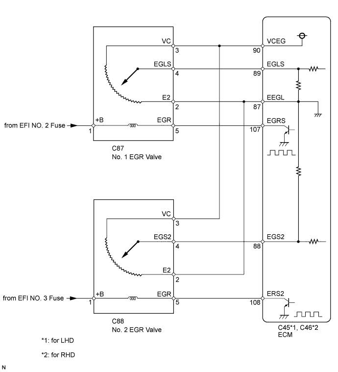
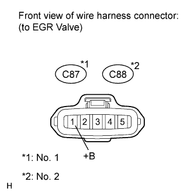
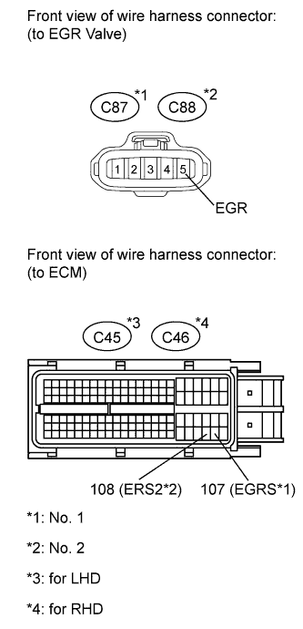

DTC P0400 Exhaust Gas Recirculation Flow |
DTC P1248 Exhaust Gas Recirculation Flow Bank 2 |
| DTC Detection Drive Pattern | DTC Detection Condition | Trouble Area |
| After warming up engine and idling for 60 seconds, maintain engine speed at 2500 rpm for 40 seconds, drive vehicle and perform engine break deceleration by fully closing accelerator when engine speed is 2000 rpm or more | The target and actual positions of the No. 1 EGR valve assembly are different for 30 seconds or more (1 trip detection logic). |
|
| DTC Detection Drive Pattern | DTC Detection Condition | Trouble Area |
| After warming up engine and idling for 60 seconds, maintain engine speed at 2500 rpm for 40 seconds, drive vehicle and perform engine break deceleration by fully closing accelerator when engine speed is 2000 rpm or more | The target and actual positions of the No. 1 EGR valve assembly are different for 30 seconds or more (1 trip detection logic). |
|
| DTC Detection Drive Pattern | DTC Detection Condition | Trouble Area |
| Decelerate from a speed of 50 km/h (80 mph) or more (release accelerator pedal for approximately 5 seconds) | Mass air flow rate is not changed when turning on the electric EGR control valve while decelerating (2 trip detection logic). |
|
| DTC No. | Data List |
| P0400 (No. 1 EGR valve malfunction) |
|
| P1248 (No. 2 EGR valve malfunction) | |
| P0400 (Flow malfunction) |

| 1.CHECK OTHER DTC OUTPUT (IN ADDITION TO DTC P0400, P1248) |
Connect the intelligent tester to the DLC3.
Turn the engine switch on (IG) and turn the tester on.
Enter the following menus: Powertrain / Engine / DTC.
Read the DTCs.
| Result | Proceed to |
| P0400 and/or P1248 are output | A |
| P0400, P1248 and other DTCs are output | B |
|
| ||||
| A | |
| 2.PERFORM ACTIVE TEST USING INTELLIGENT TESTER (CONTROL THE EGR STEP POSITION) |
Connect the intelligent tester to the DLC3.
Turn the engine switch on (IG) and turn the tester on.
Enter the following menus: Powertrain / Engine / Active Test / Control the EGR Step Position or Control the EGR Step Position #2 / Data List / Actual EGR Valve Pos. or Actual EGR Valve Pos. #2.
When changing the Active Test value from 0 to 100%, check that Actual EGR Valve Pos. or Actual EGR Valve Pos. #2 smoothly changes to the set opening angle.
|
| ||||
| OK | |
| 3.READ VALUE USING INTELLIGENT TESTER (EGR VALVE LEARNING VALUE) |
Connect the intelligent tester to the DLC3.
Turn the engine switch from on (IG) to off, and wait 5 seconds. Then turn the engine switch on (IG) and the tester on.
Enter the following menus: Powertrain / Engine / Data List / EGR Close Learn Val. or EGR Close Lrn. Val. #2 and EGR Lift Sensor Output.
Check the value.
| Tester Display | Standard value |
| EGR Close Learn Val. | 3.5 to 4.5 V |
| EGR Close Lrn. Val. #2 | 3.5 to 4.5 V |
| EGR Lift Sensor Output | 70 to 90% |
|
| ||||
| OK | |
| 4.CHECK FOR DEPOSIT (EGR PASSAGE) |
Check for any deposits.
|
| ||||
| OK | |
| 5.CHECK FOR EXHAUST GAS LEAKS |
Check for exhaust gas leaks.
|
| ||||
|
| ||||
| 6.INSPECT EGR VALVE ASSEMBLY (POWER SOURCE) |
 |
Disconnect the EGR valve connector.
Measure the voltage according to the value(s) in the table below.
| Tester Connection | Switch Condition | Specified Condition |
| C87-1 (+B) - Body ground | Engine switch on (IG) | 11 to 14 V |
| Tester Connection | Switch Condition | Specified Condition |
| C88-1 (+B) - Body ground | Engine switch on (IG) | 11 to 14 V |
|
| ||||
| OK | |
| 7.CHECK HARNESS AND CONNECTOR (EGR VALVE ASSEMBLY - ECM) |
 |
Disconnect the EGR valve connector.
Disconnect the ECM connector.
Measure the resistance according to the value(s) in the table below.
| Tester Connection | Condition | Specified Condition |
| C87-5 (EGR) - C45-107 (EGRS) | Always | Below 1 Ω |
| Tester Connection | Condition | Specified Condition |
| C88-5 (EGR) - C45-108 (ERS2) | Always | Below 1 Ω |
| Tester Connection | Condition | Specified Condition |
| C87-5 (EGR) - C46-107 (EGRS) | Always | Below 1 Ω |
| Tester Connection | Condition | Specified Condition |
| C88-5 (EGR) - C46-108 (ERS2) | Always | Below 1 Ω |
| Tester Connection | Condition | Specified Condition |
| C87-5 (EGR) or C45-107 (EGRS) - Body ground | Always | 10 kΩ or higher |
| Tester Connection | Condition | Specified Condition |
| C88-5 (EGR) or C45-108 (ERS2) - Body ground | Always | 10 kΩ or higher |
| Tester Connection | Condition | Specified Condition |
| C87-5 (EGR) or C46-107 (EGRS) - Body ground | Always | 10 kΩ or higher |
| Tester Connection | Condition | Specified Condition |
| C88-5 (EGR) or C46-108 (ERS2) - Body ground | Always | 10 kΩ or higher |
|
| ||||
| OK | |
| 8.REPLACE EGR VALVE ASSEMBLY (No. 1 or No. 2) |
Replace the EGR valve assembly (No. 1 or No. 2) (Click here).
| NEXT | |
| 9.CHECK WHETHER DTC OUTPUT RECURS |
Clear the DTCs (Click here).
Connect the intelligent tester to the DLC3.
Turn the engine switch on (IG) and turn the tester on.
Start the engine and warm it up.
Switch the ECM from normal mode to check mode using the tester (Click here).
After warming up the engine and idling for 60 seconds, maintain the engine speed at 2500 rpm for 40 seconds, decelerate from a speed of 50 km/h (80 mph) or more (release accelerator pedal for approximately 5 seconds).
Confirm that the DTC is not output again.
Enter the following menus: Powertrain / Engine / Utility / All Readiness.
Input DTC P0400 and/or P1248.
Check that STATUS is NORMAL. If STATUS is INCOMPLETE or UNKNOWN, after warming up the engine and idling for 60 seconds, maintain the engine speed at 2500 rpm for 40 seconds, decelerate from a speed of 50 km/h (80 mph) or more (release accelerator pedal for approximately 5 seconds).
| Result | Proceed to |
| NORMAL | A |
| ABNORMAL | B |
|
| ||||
|
| ||||
| 10.REMOVE FOREIGN OBJECT AND CLEAN EGR VALVE (No. 1 or No. 2) |
|
| ||||
| 11.REPAIR OR REPLACE MALFUNCTIONING PARTS, COMPONENT AND AREA |
|
| ||||
| 12.REPAIR EXHAUST GAS LEAKAGE POINT |
|
| ||||
| 13.REPAIR OR REPLACE HARNESS OR CONNECTOR (BATTERY - EGR VALVE CONNECTOR) |
|
| ||||
| 14.REPAIR OR REPLACE HARNESS OR CONNECTOR |
|
| ||||
| 15.REPLACE ECM |
Replace the ECM (Click here).
| NEXT | |
| 16.CONFIRM WHETHER MALFUNCTION HAS BEEN SUCCESSFULLY REPAIRED |
Connect the intelligent tester to the DLC3.
Clear the DTCs (Click here).
Turn the engine switch off.
Start the engine.
After warming up the engine and idling for 60 seconds, maintain the engine speed at 2500 rpm for 40 seconds, decelerate from a speed of 50 km/h (80 mph) or more (release accelerator pedal for approximately 5 seconds).
Confirm that the DTC is not output again.
Enter the following menus: Powertrain / Engine / Utility / All Readiness.
Input DTC P0400 and/or P1248.
Check that STATUS is NORMAL. If STATUS is INCOMPLETE or UNKNOWN, after warming up the engine and idling for 60 seconds, maintain the engine speed at 2500 rpm for 40 seconds, decelerate from a speed of 50 km/h (80 mph) or more (release accelerator pedal for approximately 5 seconds).
| NEXT | ||
| ||